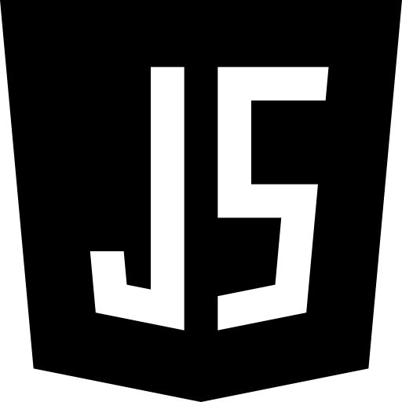

insights of some projects that i built
My projects
projects created in React js
React Js
- I developed a React project, a dynamic website that displays real-time news upon opening. This platform utilizes the News API, fetching data each time the page loads to provide current news updates. Users can customize their news feed by selecting categories such as general, business, science, technology, entertainment, health, and sports. Additionally, I incorporated features like a loading bar to enhance the user experience.
- Also created a text editor website project featuring text conversion to upper or lower case, with additional functionalities such as word count and copy text. To enhance user efficiency, I incorporated dark and light mode options.
websites built using JavaScripts
JavaScript
- Engaged in the Smart India Hackathon, I played a key role in developing a fully functional frontend and backend website focused on mental health assessment for school and college students, addresses anxiety, depression, social media addiction, and ADHD levels. It also includes features like connecting with counselors for guidance. Our project, ranked 7th out of 70 at the university level.
- A frontendand backend acomplished "To do list" website where you can add or update you to do tasks and delete them from the list once completed.
- Also created an attractive looking frontend acomplished "iCoder" website having functionlities like login and signin popups, about page and contact page using javascript and bootstrap.


website clones using css